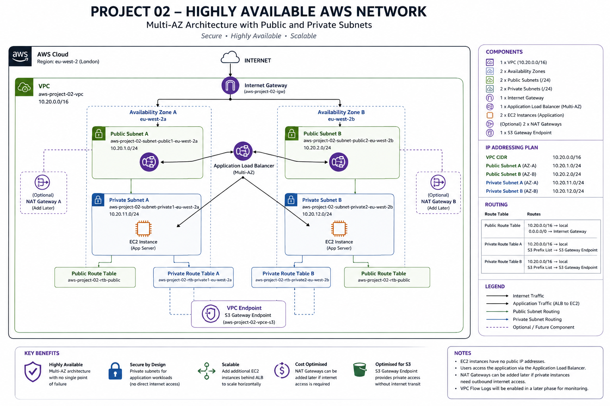

A secure multi-AZ AWS architecture with separate web and application tiers, public and internal load balancing, private application servers, HTTPS and private configuration retrieval from Amazon S3.
The objective of this project was to design and deploy a production-style, highly available AWS network across two Availability Zones in the London region. The design separates Internet-facing web servers from private application servers and controls traffic between every tier using load balancers and security groups.
The environment was built manually through the AWS Management Console to develop a detailed understanding of VPC routing, subnet design, load balancing, security-group references, private service access and EC2 management without opening administrative inbound ports.
The VPC spans two Availability Zones. Each zone contains one public subnet for the web tier and one private subnet for the application tier. An Internet-facing Application Load Balancer distributes HTTPS requests to both web servers, while a separate internal Application Load Balancer distributes API requests to both private application servers.

aws-project-02-vpc: 10.20.0.0/16
Public subnet: 10.20.1.0/24
Private subnet: 10.20.11.0/24
Public subnet: 10.20.2.0/24
Private subnet: 10.20.12.0/24
Provides the isolated network, IPv4 addressing, public and private subnets, route tables and Internet Gateway used by the architecture.
The Internet-facing aws-project-02-web-alb accepts HTTPS traffic on port 443 and forwards requests to the web tier on port 80. The internal aws-project-02-app-alb listens on port 80 and forwards requests to the application tier on port 8080.
Two Apache web servers and two Flask/Gunicorn application servers are distributed across separate Availability Zones. The application servers have no direct inbound route from the Internet.
Route 53 directs project2.aws.waygood.net to the public Application Load Balancer. An ACM certificate secures the public endpoint with HTTPS, and HTTP requests are redirected to HTTPS.
The private bucket waygood-project-02-app-config stores application configuration. Both application servers retrieve the configuration through aws-project-02-vpce-s3, keeping S3 traffic on the AWS network instead of sending it through the NAT Gateway.
aws-project-02-nat-regional provides controlled outbound Internet access from the private subnets for software installation and operating-system services. It is not part of the inbound application request path.
EC2 instance roles provide temporary AWS credentials. The application role has least-privilege permission to read only the required S3 configuration object and includes the permissions needed for Systems Manager.
Provides secure browser-based administration of all four EC2 instances without SSH keys, bastion hosts or inbound SSH security-group rules.
The public Application Load Balancer is the only Internet-facing application entry point. It terminates TLS using ACM and redirects unencrypted HTTP requests to HTTPS.
The web servers accept HTTP only from the public ALB security group. The internal ALB accepts requests only from the web-server security group. Application servers accept port 8080 only from the internal ALB security group.
The application instances are located in private subnets and cannot be reached directly from the Internet or directly from the web tier. Application requests must pass through the internal ALB.
S3 Block Public Access is enabled. The application uses an IAM role rather than stored access keys, and its inline policy permits s3:GetObject only for config/app-config.json in the project bucket.
Both compute tiers are deployed across eu-west-2a and eu-west-2b. Each load balancer performs health checks and sends requests only to healthy targets. This removes any individual web server, application server or Availability Zone from being the sole application endpoint.
Internet
|
v
Multi-AZ Public ALB
|
+-----> Web Server 01 (eu-west-2a)
|
+-----> Web Server 02 (eu-west-2b)
|
v
Multi-AZ Internal ALB
|
+--------------+--------------+
| |
v v
App Server 01 App Server 02
(eu-west-2a) (eu-west-2b)
The Flask application uses the AWS SDK for Python (Boto3) to retrieve a JSON configuration object from Amazon S3. Boto3 automatically obtains temporary credentials from the EC2 instance role, so no credentials are stored in the application code.
The live webpage displays the returned environment, configuration version, configuration message, application-server hostname and configuration source. Repeated requests demonstrate independent load balancing across both the web and application tiers.
Result: The custom HTTPS domain returned the project page using a valid ACM certificate, while HTTP redirected to HTTPS.
Result: Requests were handled successfully by web-01 and web-02 across both Availability Zones.
Result: Repeated API requests returned hostnames from both private application servers through the internal ALB.
Result: Direct web-server connections to application private IP addresses were blocked after the temporary test rule was removed, while access through the internal ALB continued to work.
Result: Both application servers retrieved the private configuration object using their IAM role and the S3 Gateway Endpoint.
AWS: VPC, EC2, Elastic Load Balancing, S3, Route 53, ACM, IAM, Systems Manager, NAT Gateway and VPC Gateway Endpoints
Networking: Multi-AZ subnet design, CIDR planning, route tables, Internet Gateway, private routing, DNS, HTTPS, reverse proxying and layered load balancing
Security: Security-group referencing, private application subnets, least-privilege IAM, temporary credentials, blocked public S3 access and keyless EC2 administration
Application: Apache HTTP Server, reverse proxy configuration, Python, Flask, Gunicorn, Boto3, JSON APIs and systemd services
Project 02 is fully deployed and validated. The live demonstration proves both stages of load balancing and displays configuration retrieved privately from Amazon S3.
Future enhancements may include EC2 Auto Scaling groups, CloudWatch alarms and dashboards, VPC Flow Logs, centralised application logging, AWS WAF, automated deployment and Terraform Infrastructure as Code.